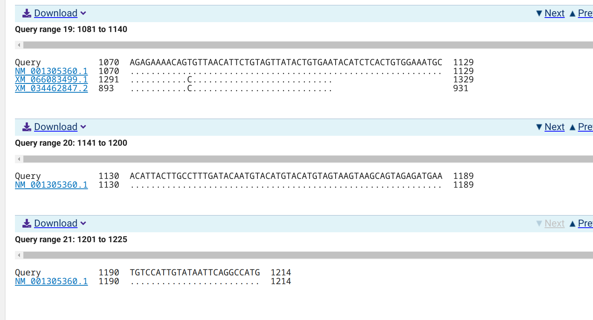
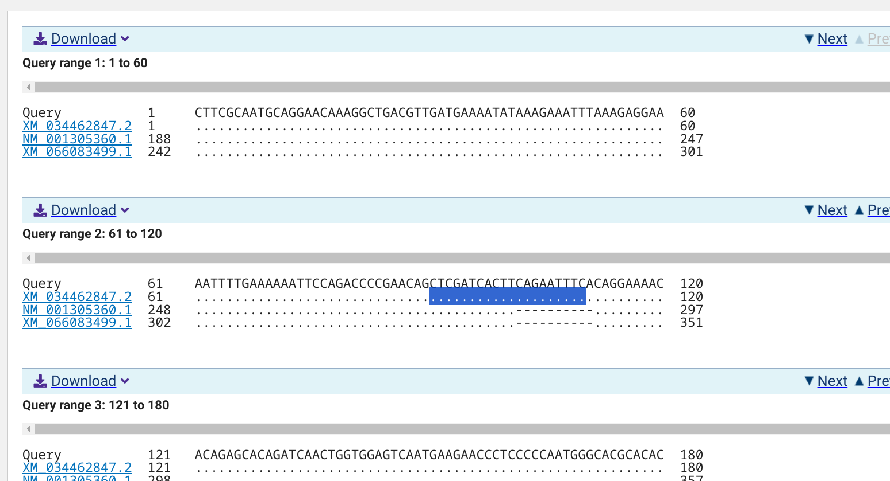
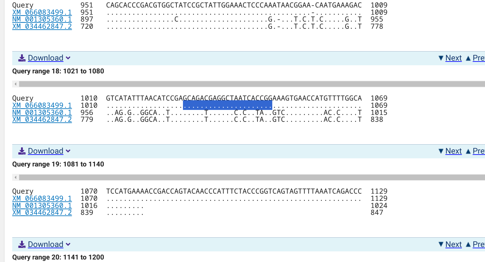

Introduction
This document outlines the process of designing primers for the alternative oxidase (AOX) gene variants in Crassostrea gigas (Pacific oyster) using Primer3. The goal is to develop specific primers for qPCR to study the expression of AOX isoforms under different experimental conditions.
The AOX gene is involved in the mitochondrial electron transport chain and is known to be responsive to oxidative stress. By designing specific primers for different AOX isoforms, we can investigate their expression patterns and potential roles in oyster physiology and stress responses.
The following sections detail the steps taken to identify AOX isoforms, retrieve their sequences, design primers using Primer3, and validate the primers using EMBOSS PrimerSearch.
Objectives
- Identify AOX isoforms in Crassostrea gigas.
- Retrieve nucleotide sequences for the identified isoforms.
- Design specific primers for each isoform using Primer3.
- Validate primer specificity using EMBOSS PrimerSearch.
Methods
The methods section includes the following steps:
- Identification of AOX Isoforms: Using BLASTx to identify AOX isoforms in the Crassostrea gigas genome.
- Sequence Retrieval: Fetching nucleotide sequences for the identified isoforms using NCBI’s e-utilities.
- Primer Design: Using Primer3 to design specific primers for each AOX isoform.
- Primer Validation: Using EMBOSS PrimerSearch to validate the specificity of the designed primers against the Crassostrea gigas genome.
The detailed procedures and scripts used for each step are provided in the subsequent sections.
The contents below are from markdown knitted from 20250117-cgig-aox-primer-design.Rmd (commit 75f0197).
1 Background
This notebook describes using Primer3 (Untergasser et al. 2012; Koressaar and Remm 2007) to reproducibly design qPCR primers for Crassostrea gigas (Magallana gigas) alternative oxidase (AOX) (Wikipedia) isoforms. Alternative oxidase is a mitochondrial gene/enzyme known to be responsive to oxidative stress, so this may be a useful biomarker that we haven’t previously considered.
Isoforms of AOX in Crassostrea gigas (Magallana gigas) were identified by running BLASTx using the Arabidopsis AOX1a nucleotide sequence (NM_113135.4) as a query against the Crassostrea gigas (Magallana gigas) genome using NCBI’s web-based BLAST interface.
BLASTx returned three matches:
NP_001292289.1: alternative oxidase, mitochondrial-like \[Magallana gigas\]
Nucleotide:
NM_001305360.1Gene:
LOC105322704
XP_034318738.2: alternative oxidase, mitochondrial-like isoform X2 \[Magallana gigas\]Nucleotide:
XM_034462847.2Gene:
LOC105322704
XP_065939571.1: alternative oxidase, mitochondrial-like isoform X1 \[Magallana gigas\]Nucleotide:
XM_066083499.1Gene:
LOC105322704
1.1 Input files
Target FastA sequences
Genome FastA
1.2 Output files
emboss-primers.txt: Output from EMBOSS PrimerSearch containing primer pair matches within the genome.*primer3-primers-default-format.txt: The default output format containing Primer3 primer identification info. Machine-readable format.*primer3-primers.txt: Primer3 output file containing primer identification info. An easy-to-read format.
1.3 Required software
Utilizes NCBI’s e-utilities (Kans 2013) for fetching FastA sequences.
This process also utilizes pyfaidx (Shirley et al. 2015).
EMBOSS PrimerSearch (Rice, Longden, and Bleasby 2000) will be utilized to assess primer specificity across the genome.
2 CREATE BASH VARIABLES FILE
This allows usage of Bash variables across R Markdown chunks.
{
echo "#### Assign Variables ####"
echo ""
echo "# DATA DIRECTORIES"
echo 'export data_dir="../data"'
echo 'export output_top="../output"'
echo 'export genome_fasta_splits_dir="${data_dir}/fasta_splits"'
echo ""
echo "# SEQUENCES"
echo 'export sequence_IDs=(XM_066083499.1 XM_034462847.2 NM_001305360.1)'
echo ""
echo "# SEQUENCE REGIONS"
echo 'export left_buffer="500"'
echo 'export right_buffer="500"'
echo ""
echo "# INPUT FILES"
echo 'export genome_fasta="GCF_963853765.1_xbMagGiga1.1_genomic.fna"'
echo 'export genome_gff="GCF_963853765.1_xbMagGiga1.1_genomic.gff"'
echo 'export ncbi_gff_gz="GCF_963853765.1_xbMagGiga1.1_genomic.gff.gz"'
echo 'export ncbi_fasta_gz="GCF_963853765.1_xbMagGiga1.1_genomic.fna.gz"'
echo 'export ncbi_md5sums="md5checksums.txt"'
echo 'export ncbi_url="https://ftp.ncbi.nlm.nih.gov/genomes/all/GCF/963/853/765/GCF_963853765.1_xbMagGiga1.1/"'
echo 'export NM_001305360_fasta="NM_001305360.1.fasta"'
echo 'export XM_034462847_fasta="XM_034462847.2.fasta"'
echo 'export XM_066083499_fasta="XM_066083499.1.fasta"'
echo "# OUTPUT FILES"
echo ""
echo "# SET CPUS"
echo 'export threads=40'
echo ""
echo "# PROGRAMS"
echo 'esearch="/home/sam/edirect/esearch"'
echo 'efetch="/home/sam/edirect/efetch"'
echo 'export pyfaidx=/home/shared/pyfaidx-0.8.1.1'
echo 'export primer3_dir="/home/shared/primer3-2.6.1/src"'
echo 'export primer3="${primer3_dir}/primer3_core"'
echo 'export primer3_config="${primer3_dir}/primer3_config"'
echo 'export primersearch="/home/shared/EMBOSS-6.6.0/emboss/primersearch"'
} > .bashvars
cat .bashvars#### Assign Variables ####
# DATA DIRECTORIES
export data_dir="../data"
export output_top="../output"
export genome_fasta_splits_dir="${data_dir}/fasta_splits"
# SEQUENCES
export sequence_IDs=(XM_066083499.1 XM_034462847.2 NM_001305360.1)
# SEQUENCE REGIONS
export left_buffer="500"
export right_buffer="500"
# INPUT FILES
export genome_fasta="GCF_963853765.1_xbMagGiga1.1_genomic.fna"
export genome_gff="GCF_963853765.1_xbMagGiga1.1_genomic.gff"
export ncbi_gff_gz="GCF_963853765.1_xbMagGiga1.1_genomic.gff.gz"
export ncbi_fasta_gz="GCF_963853765.1_xbMagGiga1.1_genomic.fna.gz"
export ncbi_md5sums="md5checksums.txt"
export ncbi_url="https://ftp.ncbi.nlm.nih.gov/genomes/all/GCF/963/853/765/GCF_963853765.1_xbMagGiga1.1/"
export NM_001305360_fasta="NM_001305360.1.fasta"
export XM_034462847_fasta="XM_034462847.2.fasta"
export XM_066083499_fasta="XM_066083499.1.fasta"
# OUTPUT FILES
# SET CPUS
export threads=40
# PROGRAMS
esearch="/home/sam/edirect/esearch"
efetch="/home/sam/edirect/efetch"
export pyfaidx=/home/shared/pyfaidx-0.8.1.1
export primer3_dir="/home/shared/primer3-2.6.1/src"
export primer3="${primer3_dir}/primer3_core"
export primer3_config="${primer3_dir}/primer3_config"
export primersearch="/home/shared/EMBOSS-6.6.0/emboss/primersearch"3 DOWNLOAD NCBI GENOME FILES
3.1 Download the files
# Load bash variables into memory
source .bashvars
for file in ${ncbi_gff_gz} ${ncbi_fasta_gz} ${ncbi_md5sums}
do
wget \
--no-check-certificate \
--continue \
--quiet \
--directory-prefix=${data_dir} \
${ncbi_url}${file}
done
ls -lh "${data_dir}"total 1.1G
drwxr-xr-x 2 sam sam 4.0K Jan 21 16:59 fasta_splits
-rw-r--r-- 1 sam sam 545M Jun 28 2024 GCF_963853765.1_xbMagGiga1.1_genomic.fna
-rw-r--r-- 1 sam sam 1.1K Jan 21 10:28 GCF_963853765.1_xbMagGiga1.1_genomic.fna.fai
-rw-r--r-- 1 sam sam 167M Jun 28 2024 GCF_963853765.1_xbMagGiga1.1_genomic.fna.gz
-rw-r--r-- 1 sam sam 373M Jun 28 2024 GCF_963853765.1_xbMagGiga1.1_genomic.gff
-rw-r--r-- 1 sam sam 15M Jun 28 2024 GCF_963853765.1_xbMagGiga1.1_genomic.gff.gz
-rw-r--r-- 1 sam sam 20K Oct 27 16:10 md5checksums.txt
-rw-r--r-- 1 sam sam 1.4K Jan 18 23:18 NM_001305360.1.fasta
-rw-rw-r-- 1 sam sam 104K Jan 21 13:50 NM_001305360.1-NCBI-BLASTn-alignment.png
-rw-rw-r-- 1 sam sam 1.1K Jan 18 23:18 XM_034462847.2.fasta
-rw-rw-r-- 1 sam sam 119K Jan 21 13:50 XM_034462847.2-NCBI-BLASTn-alignment.png
-rw-rw-r-- 1 sam sam 1.5K Jan 18 23:18 XM_066083499.1.fasta
-rw-rw-r-- 1 sam sam 147K Jan 21 13:50 XM_066083499.1-NCBI-BLASTn-alignment.png3.2 Check MD5 Checkums
# Load bash variables into memory
source .bashvars
cd "${data_dir}"
for file in *.gz
do
grep "${file}" ${ncbi_md5sums} | md5sum -c -
done./GCF_963853765.1_xbMagGiga1.1_genomic.fna.gz: OK
./GCF_963853765.1_xbMagGiga1.1_genomic.gff.gz: OK3.3 Decompress NCBI files
# Load bash variables into memory
source .bashvars
cd "${data_dir}"
for file in *.gz
do
gunzip "${file}"
done
ls -lhgzip: GCF_963853765.1_xbMagGiga1.1_genomic.fna already exists; not overwritten
gzip: GCF_963853765.1_xbMagGiga1.1_genomic.gff already exists; not overwritten
total 1.1G
drwxr-xr-x 2 sam sam 4.0K Jan 21 16:59 fasta_splits
-rw-r--r-- 1 sam sam 545M Jun 28 2024 GCF_963853765.1_xbMagGiga1.1_genomic.fna
-rw-r--r-- 1 sam sam 1.1K Jan 21 10:28 GCF_963853765.1_xbMagGiga1.1_genomic.fna.fai
-rw-r--r-- 1 sam sam 167M Jun 28 2024 GCF_963853765.1_xbMagGiga1.1_genomic.fna.gz
-rw-r--r-- 1 sam sam 373M Jun 28 2024 GCF_963853765.1_xbMagGiga1.1_genomic.gff
-rw-r--r-- 1 sam sam 15M Jun 28 2024 GCF_963853765.1_xbMagGiga1.1_genomic.gff.gz
-rw-r--r-- 1 sam sam 20K Oct 27 16:10 md5checksums.txt
-rw-r--r-- 1 sam sam 1.4K Jan 18 23:18 NM_001305360.1.fasta
-rw-rw-r-- 1 sam sam 104K Jan 21 13:50 NM_001305360.1-NCBI-BLASTn-alignment.png
-rw-rw-r-- 1 sam sam 1.1K Jan 18 23:18 XM_034462847.2.fasta
-rw-rw-r-- 1 sam sam 119K Jan 21 13:50 XM_034462847.2-NCBI-BLASTn-alignment.png
-rw-rw-r-- 1 sam sam 1.5K Jan 18 23:18 XM_066083499.1.fasta
-rw-rw-r-- 1 sam sam 147K Jan 21 13:50 XM_066083499.1-NCBI-BLASTn-alignment.png4 RETRIEVE GENE SEQUENCES
The below would not execute in Rstudio/Rstudio Server. I tried on two different computers and the chunk would just “run” indefinitly. Code executes without issue in a terminal.
for ID in "${sequence_IDs[@]}"
do
${esearch} -db nuccore -query "${ID}" \
| ${efetch} -format fasta \
> "${data_dir}"/"${ID}".fasta
done5 PRIMER DESIGN USING PRIMER3
5.1 Design primers
Quick explanation: Primer3 requires a specially formatted input file. The file must be formatted similarly to this:
SEQUENCE_ID=${seq_id}
SEQUENCE_TEMPLATE=${sequence}
PRIMER_TASK=generic
PRIMER_PICK_LEFT_PRIMER=3
PRIMER_PICK_RIGHT_PRIMER=3
PRIMER_OPT_SIZE=18
PRIMER_MIN_SIZE=15
PRIMER_MAX_SIZE=21
PRIMER_MAX_NS_ACCEPTED=1
PRIMER_PRODUCT_SIZE_RANGE=75-150
P3_FILE_FLAG=1
PRIMER_EXPLAIN_FLAG=1
=Values after the = on each line can be changed to whatever values the user decides. The ${sequence} must be a nucleotide sequence on a single line, with no line breaks.
The code in the chunk below uses a heredoc to write this information to a file. Use of a heredoc allows the variables specified in the Primer3 config to expand to their actual values. Everything between the following two lines gets printed (via cat) as shown and then redirected to the indicated file (primer3-params.txt):
cat << EOF > ${output_top}/primer3-params.txt
This text will end up in the file.
So will this.
And this.
EOFPrimer3 is run with the --format_output to make a nice, human-readable output format.
I’ve also set Primer3 to look for sequencing primers and have defined the SEQUENCE_TARGET.
5.1.0.1 NCBI BLASTn alignments
Each sequence was BLASTn’d against C.gigas nucleotides to identify unique regions in each of the three variants to improve our ability to detect each variant’s expression level.
5.1.0.1.1 NM_001305360.1

5.1.0.1.2 XM_034462847.2

5.1.0.1.3 XM_066083499.1

5.1.1 NM_001305360.1
# Load bash variables into memory
source .bashvars
# Get sequence only, by skipping the first record
# Remove newlines so sequence is on a single line
sequence=$(awk 'NR > 1' "${data_dir}/${NM_001305360_fasta}" | tr -d '\n')
sequence_ID="NM_001305360.1"
# Use heredoc to create Primer3 parameters file
# PRIMER_TASK=generic is used with PRIMER_PICK settings to be PCR primers.
cat << EOF > ${output_top}/NM_001305360.1-primer3-params.txt
SEQUENCE_ID=${sequence_ID}
SEQUENCE_TEMPLATE=${sequence}
PRIMER_TASK=generic
PRIMER_MIN_TM=50
PRIMER_OPT_TM=60
SEQUENCE_PRIMER_PAIR_OK_REGION_LIST=1109,50,,
PRIMER_PICK_LEFT_PRIMER=1
PRIMER_PICK_INTERNAL_OLIGO=0
PRIMER_PICK_RIGHT_PRIMER=1
PRIMER_OPT_SIZE=20
PRIMER_MIN_SIZE=18
PRIMER_MAX_SIZE=25
PRIMER_PRODUCT_SIZE_RANGE=75-150
PRIMER_MAX_NS_ACCEPTED=0
P3_FILE_FLAG=1
PRIMER_EXPLAIN_FLAG=1
PRIMER_THERMODYNAMIC_PARAMETERS_PATH=${primer3_config}
PRIMER_NUM_RETURN=3
PRIMER_PAIR_EXPLAIN=considered 0, ok 0
=
EOF
# Run Primer3
${primer3} \
--format_output \
--output="${output_top}/NM_001305360.1-primer3-primers.txt" \
"${output_top}/NM_001305360.1-primer3-params.txt"
# Run Primer3 with default output for parsable results
${primer3} \
--output="${output_top}/NM_001305360.1-primer3-primers-default-format.txt" \
"${output_top}/NM_001305360.1-primer3-params.txt"5.1.1.1 Review primers
5.1.1.1.1 Easy-to-read
source .bashvars
cat "${output_top}/NM_001305360.1-primer3-primers.txt"PRIMER PICKING RESULTS FOR NM_001305360.1
No mispriming library specified
Using 0-based sequence positions
OLIGO start len tm gc% any_th 3'_th hairpin seq
LEFT PRIMER 1112 20 57.36 45.00 8.11 7.53 0.00 TCTCACTGTGGAAATGCACA
RIGHT PRIMER 1194 21 56.16 42.86 0.00 0.00 0.00 TGGACATTCATCTCTACTGCT
SEQUENCE SIZE: 1214
INCLUDED REGION SIZE: 1214
PRODUCT SIZE: 83, PAIR ANY_TH COMPL: 0.00, PAIR 3'_TH COMPL: 0.00
PAIR_OK_REGIONS (left_start, left_len, right_start, right_len)*: 1109,50,1158,57
0 GGAATTTTCAGATTTGAGAAGTGAAGAATATATCTGAGGTACTTTAAATATACGATGCGC
60 TATGGGAAGTTTGCGACAAATAACGAAATTGAGTGAAAATGGTGTCCGGATTTTCTGTTC
120 CCAACTAAAGAATCTAGAAAATAATTCAATTCTACTGAGGGTCAGTGGAATTCGCACCAG
180 CAATGGGCTTCGCAATGCAGGAACAAAGGCTGACGTTGATGAAAATATAAAGAAATTTAA
240 AGAGGAAAATTTTGAAAAAATTCCAGACCCCGAACAGCTCGATCACTTCAGGAAAACACA
300 GAGCACAGATCAACTGGTGGAGTCAATGAAGAACCCTCCCCCAATGGGCACGCACACACT
360 GCCCCACCCAATATGGTCTGAAGAAGAACTTCATAGTGTGAAGGTCACACATAAACCGCC
420 CGAGGGATTCGTAGACAAGCTTGCCTTTCGATCAGTGAAGCTGCTACGTTCAACTTTTGA
480 CCTTTTAACCGGGTTCAACTGGGGAGAAAGAACGGAGAAGAAATGGGTCTTACGGATTTG
540 CTTCCTAGAGACTGTCGCTGGAGTTCCAGGAATGGTGGCAGCGATGACGCGACATTTACA
600 CTCTTTGCGCCGACTCAAGCGGGATCACGGCTGGATTCATACCCTTTTAGAGGAAGCAGA
660 AAACGAGAGAATGCATCTGATGACAGCATTGCAGCTTCGACAACCATCTTGGTTATTTAG
720 AAGTGGCGTCATCGTGTCTCAGGGTGCTTTCGTCACGATGTTCAGCATTGCCTATATGCT
780 AAGTCCTCGGTTTTGTCATCGTTTCGTTGGCTATCTAGAGGAGGAAGCAGTGTTTACTTA
840 TTCAAAATGTTTGAAGGATATAGAGTCAGGGTCCCTTAAACACTGGCAAACAAAAGCAGC
900 ACCCGACGTGGCCATCCGCTATTGGAAACTCCCAGAAACTGCATCCATGAAGGATGTAGT
960 GTTGGCAATTCGAGCAGATGAGGCTCACCATAGGGTCGTGAACCATACTCTGGCTTCCAT
1020 GAAAGAAGACGAATACAATCCTTATGAGCCAGGGAAGTGATATGGAAGCAGAGAAAACAG
1080 TGTTAACATTCTGTAGTTATACTGTGAATACATCTCACTGTGGAAATGCACATTACTTGC
>>>>>>>>>>>>>>>>>>>>
1140 CTTTGATACAATGTACATGTACATGTAGTAAGTAAGCAGTAGAGATGAATGTCCATTGTA
<<<<<<<<<<<<<<<<<<<<<
1200 TAATTCAGGCCATG
KEYS (in order of precedence):
>>>>>> left primer
<<<<<< right primer
ADDITIONAL OLIGOS
start len tm gc% any_th 3'_th hairpin seq
1 LEFT PRIMER 1110 22 59.18 45.45 8.11 7.53 0.00 CATCTCACTGTGGAAATGCACA
RIGHT PRIMER 1194 21 56.16 42.86 0.00 0.00 0.00 TGGACATTCATCTCTACTGCT
PRODUCT SIZE: 85, PAIR ANY_TH COMPL: 0.00, PAIR 3'_TH COMPL: 0.00
2 LEFT PRIMER 1109 22 59.18 45.45 8.11 0.00 0.00 ACATCTCACTGTGGAAATGCAC
RIGHT PRIMER 1194 21 56.16 42.86 0.00 0.00 0.00 TGGACATTCATCTCTACTGCT
PRODUCT SIZE: 86, PAIR ANY_TH COMPL: 0.00, PAIR 3'_TH COMPL: 0.00
Statistics
con too in in not no tm tm high high high high
sid many tar excl ok bad GC too too any_th 3'_th hair- poly end
ered Ns get reg reg GC% clamp low high compl compl pin X stab ok
Left 9120 0 0 0 8887 0 0 22 0 0 0 0 0 0 211
Right 9120 0 0 0 8836 0 0 90 0 0 0 0 0 0 194
Pair Stats:
considered 3, ok 3
libprimer3 release 2.6.15.1.1.1.2 Print the full output file
source .bashvars
cat "${output_top}/NM_001305360.1-primer3-primers-default-format.txt"SEQUENCE_ID=NM_001305360.1
SEQUENCE_TEMPLATE=GGAATTTTCAGATTTGAGAAGTGAAGAATATATCTGAGGTACTTTAAATATACGATGCGCTATGGGAAGTTTGCGACAAATAACGAAATTGAGTGAAAATGGTGTCCGGATTTTCTGTTCCCAACTAAAGAATCTAGAAAATAATTCAATTCTACTGAGGGTCAGTGGAATTCGCACCAGCAATGGGCTTCGCAATGCAGGAACAAAGGCTGACGTTGATGAAAATATAAAGAAATTTAAAGAGGAAAATTTTGAAAAAATTCCAGACCCCGAACAGCTCGATCACTTCAGGAAAACACAGAGCACAGATCAACTGGTGGAGTCAATGAAGAACCCTCCCCCAATGGGCACGCACACACTGCCCCACCCAATATGGTCTGAAGAAGAACTTCATAGTGTGAAGGTCACACATAAACCGCCCGAGGGATTCGTAGACAAGCTTGCCTTTCGATCAGTGAAGCTGCTACGTTCAACTTTTGACCTTTTAACCGGGTTCAACTGGGGAGAAAGAACGGAGAAGAAATGGGTCTTACGGATTTGCTTCCTAGAGACTGTCGCTGGAGTTCCAGGAATGGTGGCAGCGATGACGCGACATTTACACTCTTTGCGCCGACTCAAGCGGGATCACGGCTGGATTCATACCCTTTTAGAGGAAGCAGAAAACGAGAGAATGCATCTGATGACAGCATTGCAGCTTCGACAACCATCTTGGTTATTTAGAAGTGGCGTCATCGTGTCTCAGGGTGCTTTCGTCACGATGTTCAGCATTGCCTATATGCTAAGTCCTCGGTTTTGTCATCGTTTCGTTGGCTATCTAGAGGAGGAAGCAGTGTTTACTTATTCAAAATGTTTGAAGGATATAGAGTCAGGGTCCCTTAAACACTGGCAAACAAAAGCAGCACCCGACGTGGCCATCCGCTATTGGAAACTCCCAGAAACTGCATCCATGAAGGATGTAGTGTTGGCAATTCGAGCAGATGAGGCTCACCATAGGGTCGTGAACCATACTCTGGCTTCCATGAAAGAAGACGAATACAATCCTTATGAGCCAGGGAAGTGATATGGAAGCAGAGAAAACAGTGTTAACATTCTGTAGTTATACTGTGAATACATCTCACTGTGGAAATGCACATTACTTGCCTTTGATACAATGTACATGTACATGTAGTAAGTAAGCAGTAGAGATGAATGTCCATTGTATAATTCAGGCCATG
PRIMER_TASK=generic
PRIMER_MIN_TM=50
PRIMER_OPT_TM=60
SEQUENCE_PRIMER_PAIR_OK_REGION_LIST=1109,50,,
PRIMER_PICK_LEFT_PRIMER=1
PRIMER_PICK_INTERNAL_OLIGO=0
PRIMER_PICK_RIGHT_PRIMER=1
PRIMER_OPT_SIZE=20
PRIMER_MIN_SIZE=18
PRIMER_MAX_SIZE=25
PRIMER_PRODUCT_SIZE_RANGE=75-150
PRIMER_MAX_NS_ACCEPTED=0
P3_FILE_FLAG=1
PRIMER_EXPLAIN_FLAG=1
PRIMER_THERMODYNAMIC_PARAMETERS_PATH=/home/shared/primer3-2.6.1/src/primer3_config
PRIMER_NUM_RETURN=3
PRIMER_PAIR_EXPLAIN=considered 0, ok 0
PRIMER_LEFT_EXPLAIN=considered 9120, low tm 22, not in any ok left region 8887, ok 211
PRIMER_RIGHT_EXPLAIN=considered 9120, low tm 90, not in any ok right region 8836, ok 194
PRIMER_PAIR_EXPLAIN=considered 3, ok 3
PRIMER_LEFT_NUM_RETURNED=3
PRIMER_RIGHT_NUM_RETURNED=3
PRIMER_INTERNAL_NUM_RETURNED=0
PRIMER_PAIR_NUM_RETURNED=3
PRIMER_PAIR_0_PENALTY=7.475896
PRIMER_LEFT_0_PENALTY=2.636647
PRIMER_RIGHT_0_PENALTY=4.839250
PRIMER_LEFT_0_SEQUENCE=TCTCACTGTGGAAATGCACA
PRIMER_RIGHT_0_SEQUENCE=TGGACATTCATCTCTACTGCT
PRIMER_LEFT_0=1112,20
PRIMER_RIGHT_0=1194,21
PRIMER_LEFT_0_TM=57.363
PRIMER_RIGHT_0_TM=56.161
PRIMER_LEFT_0_GC_PERCENT=45.000
PRIMER_RIGHT_0_GC_PERCENT=42.857
PRIMER_LEFT_0_SELF_ANY_TH=8.11
PRIMER_RIGHT_0_SELF_ANY_TH=0.00
PRIMER_LEFT_0_SELF_END_TH=7.53
PRIMER_RIGHT_0_SELF_END_TH=0.00
PRIMER_LEFT_0_HAIRPIN_TH=0.00
PRIMER_RIGHT_0_HAIRPIN_TH=0.00
PRIMER_LEFT_0_END_STABILITY=4.5700
PRIMER_RIGHT_0_END_STABILITY=4.2400
PRIMER_PAIR_0_COMPL_ANY_TH=0.00
PRIMER_PAIR_0_COMPL_END_TH=0.00
PRIMER_PAIR_0_PRODUCT_SIZE=83
PRIMER_PAIR_0_PRODUCT_TM=76.5
PRIMER_PAIR_1_PENALTY=7.654753
PRIMER_LEFT_1_PENALTY=2.815503
PRIMER_RIGHT_1_PENALTY=4.839250
PRIMER_LEFT_1_SEQUENCE=CATCTCACTGTGGAAATGCACA
PRIMER_RIGHT_1_SEQUENCE=TGGACATTCATCTCTACTGCT
PRIMER_LEFT_1=1110,22
PRIMER_RIGHT_1=1194,21
PRIMER_LEFT_1_TM=59.184
PRIMER_RIGHT_1_TM=56.161
PRIMER_LEFT_1_GC_PERCENT=45.455
PRIMER_RIGHT_1_GC_PERCENT=42.857
PRIMER_LEFT_1_SELF_ANY_TH=8.11
PRIMER_RIGHT_1_SELF_ANY_TH=0.00
PRIMER_LEFT_1_SELF_END_TH=7.53
PRIMER_RIGHT_1_SELF_END_TH=0.00
PRIMER_LEFT_1_HAIRPIN_TH=0.00
PRIMER_RIGHT_1_HAIRPIN_TH=0.00
PRIMER_LEFT_1_END_STABILITY=4.5700
PRIMER_RIGHT_1_END_STABILITY=4.2400
PRIMER_PAIR_1_COMPL_ANY_TH=0.00
PRIMER_PAIR_1_COMPL_END_TH=0.00
PRIMER_PAIR_1_PRODUCT_SIZE=85
PRIMER_PAIR_1_PRODUCT_TM=76.8
PRIMER_PAIR_2_PENALTY=7.655337
PRIMER_LEFT_2_PENALTY=2.816087
PRIMER_RIGHT_2_PENALTY=4.839250
PRIMER_LEFT_2_SEQUENCE=ACATCTCACTGTGGAAATGCAC
PRIMER_RIGHT_2_SEQUENCE=TGGACATTCATCTCTACTGCT
PRIMER_LEFT_2=1109,22
PRIMER_RIGHT_2=1194,21
PRIMER_LEFT_2_TM=59.184
PRIMER_RIGHT_2_TM=56.161
PRIMER_LEFT_2_GC_PERCENT=45.455
PRIMER_RIGHT_2_GC_PERCENT=42.857
PRIMER_LEFT_2_SELF_ANY_TH=8.11
PRIMER_RIGHT_2_SELF_ANY_TH=0.00
PRIMER_LEFT_2_SELF_END_TH=0.00
PRIMER_RIGHT_2_SELF_END_TH=0.00
PRIMER_LEFT_2_HAIRPIN_TH=0.00
PRIMER_RIGHT_2_HAIRPIN_TH=0.00
PRIMER_LEFT_2_END_STABILITY=4.5700
PRIMER_RIGHT_2_END_STABILITY=4.2400
PRIMER_PAIR_2_COMPL_ANY_TH=0.00
PRIMER_PAIR_2_COMPL_END_TH=0.00
PRIMER_PAIR_2_PRODUCT_SIZE=86
PRIMER_PAIR_2_PRODUCT_TM=76.7
=5.1.2 XM_034462847.2
# Load bash variables into memory
source .bashvars
# Get sequence only, by skipping the first record
# Remove newlines so sequence is on a single line
sequence=$(awk 'NR > 1' "${data_dir}/${XM_034462847_fasta}" | tr -d '\n')
sequence_ID="XM_034462847.2"
# Use heredoc to create Primer3 parameters file
# PRIMER_TASK=generic is used with PRIMER_PICK settings to be PCR primers.
cat << EOF > ${output_top}/XM_034462847.2-primer3-params.txt
SEQUENCE_ID=${sequence_ID}
SEQUENCE_TEMPLATE=${sequence}
PRIMER_TASK=generic
PRIMER_MIN_TM=50
PRIMER_OPT_TM=60
SEQUENCE_PRIMER_PAIR_OK_REGION_LIST=90,25,,
PRIMER_PICK_LEFT_PRIMER=1
PRIMER_PICK_INTERNAL_OLIGO=0
PRIMER_PICK_RIGHT_PRIMER=1
PRIMER_OPT_SIZE=20
PRIMER_MIN_SIZE=18
PRIMER_MAX_SIZE=25
PRIMER_PRODUCT_SIZE_RANGE=75-150
PRIMER_MAX_NS_ACCEPTED=0
P3_FILE_FLAG=1
PRIMER_EXPLAIN_FLAG=1
PRIMER_THERMODYNAMIC_PARAMETERS_PATH=${primer3_config}
PRIMER_NUM_RETURN=3
PRIMER_PAIR_EXPLAIN=considered 0, ok 0
=
EOF
# Run Primer3
${primer3} \
--format_output \
--output="${output_top}/XM_034462847.2-primer3-primers.txt" \
"${output_top}/XM_034462847.2-primer3-params.txt"
# Run Primer3 with default output for parsable results
${primer3} \
--output="${output_top}/XM_034462847.2-primer3-primers-default-format.txt" \
"${output_top}/XM_034462847.2-primer3-params.txt"5.1.2.1 Review primers
5.1.2.1.1 Easy-to-read
source .bashvars
cat "${output_top}/XM_034462847.2-primer3-primers.txt"PRIMER PICKING RESULTS FOR XM_034462847.2
No mispriming library specified
Using 0-based sequence positions
OLIGO start len tm gc% any_th 3'_th hairpin seq
LEFT PRIMER 91 24 59.07 41.67 0.00 0.00 0.00 TCGATCACTTCAGAATTTCACAGG
RIGHT PRIMER 169 20 60.03 60.00 0.00 0.00 0.00 CCATTGGGGGAGGGTTCTTC
SEQUENCE SIZE: 931
INCLUDED REGION SIZE: 931
PRODUCT SIZE: 79, PAIR ANY_TH COMPL: 0.00, PAIR 3'_TH COMPL: 0.00
PAIR_OK_REGIONS (left_start, left_len, right_start, right_len)*: 90,25,139,109
0 CTTCGCAATGCAGGAACAAAGGCTGACGTTGATGAAAATATAAAGAAATTTAAAGAGGAA
60 AATTTTGAAAAAATTCCAGACCCCGAACAGCTCGATCACTTCAGAATTTCACAGGAAAAC
>>>>>>>>>>>>>>>>>>>>>>>>
120 ACAGAGCACAGATCAACTGGTGGAGTCAATGAAGAACCCTCCCCCAATGGGCACGCACAC
<<<<<<<<<<<<<<<<<<<<
180 ACTGCCCCACCCAATATGGTCTGAAGAAGAACTTCATAGTGTGAAGGTCACACATAAACC
240 GCCCGAGGGATTCGTAGACAAGCTTGCCTTTCGATCAGTGAAGCTGCTACGTTCAACTTT
300 TGACCTTTTAACCGGGTTCAACTGGGGAGAAAGAACGGAGAAGAAATGGGTGTTACGGAT
360 TTGCTTCCTAGAGACTGTCGCTGGAGTTCCAGGGATGGTGGCAGCGATGACGCGACATTT
420 ACACTCTTTGCGCCGACTCAAGCGGGATCACGGCTGGATTCATACCCTTTTAGAGGAAGC
480 AGAAAACGAAAGAATGCATCTGATGACAGCATTGCAGCTTCGACAACCATCTTGGTTATT
540 TAGAAGTGGCGTCATCGTGTCTCAGGGTGCTTTCGTCACGATGTTCAGCATTGCCTATAT
600 GCTAAGCCCTCGGTTTTGTCATCGGTTCGTTGGCTATCTAGAGGAGGAAGCAGTGTTTAC
660 TTACTCAAAATGTTTGAAGGATATAGAGTCAGGGCCCCTTAAACACTGGCAAACAAAAGC
720 AGCACCCGACGTGGCTATCCGCTATTGGAAACTCCCAGAAACTGCATCCATGAAGGATGT
780 AGTGTTGGCAATTCGAGCAGATGAGGCTCACCATAGGGTCGTGAACCATACTCTGGCTTC
840 CATGAAAGAAGACGAATACAATCCTTATGAGCCAGGGAAGTGATATGGAAGCAGAGAAAA
900 CAGCGTTAACATTCTGTAGTTATACTGTGAA
KEYS (in order of precedence):
>>>>>> left primer
<<<<<< right primer
ADDITIONAL OLIGOS
start len tm gc% any_th 3'_th hairpin seq
1 LEFT PRIMER 91 24 59.07 41.67 0.00 0.00 0.00 TCGATCACTTCAGAATTTCACAGG
RIGHT PRIMER 196 20 60.03 55.00 0.00 0.00 0.00 ATATTGGGTGGGGCAGTGTG
PRODUCT SIZE: 106, PAIR ANY_TH COMPL: 0.00, PAIR 3'_TH COMPL: 0.00
2 LEFT PRIMER 91 24 59.07 41.67 0.00 0.00 0.00 TCGATCACTTCAGAATTTCACAGG
RIGHT PRIMER 197 20 60.03 55.00 0.00 0.00 0.00 CATATTGGGTGGGGCAGTGT
PRODUCT SIZE: 107, PAIR ANY_TH COMPL: 0.00, PAIR 3'_TH COMPL: 0.00
Statistics
con too in in not no tm tm high high high high
sid many tar excl ok bad GC too too any_th 3'_th hair- poly end
ered Ns get reg reg GC% clamp low high compl compl pin X stab ok
Left 6856 0 0 0 6820 0 0 10 0 0 0 0 0 0 26
Right 6856 0 0 0 6148 0 0 42 255 0 0 185 0 0 226
Pair Stats:
considered 4, ok 4
libprimer3 release 2.6.15.1.2.1.2 Print the full output file
source .bashvars
cat "${output_top}/XM_034462847.2-primer3-primers-default-format.txt"SEQUENCE_ID=XM_034462847.2
SEQUENCE_TEMPLATE=CTTCGCAATGCAGGAACAAAGGCTGACGTTGATGAAAATATAAAGAAATTTAAAGAGGAAAATTTTGAAAAAATTCCAGACCCCGAACAGCTCGATCACTTCAGAATTTCACAGGAAAACACAGAGCACAGATCAACTGGTGGAGTCAATGAAGAACCCTCCCCCAATGGGCACGCACACACTGCCCCACCCAATATGGTCTGAAGAAGAACTTCATAGTGTGAAGGTCACACATAAACCGCCCGAGGGATTCGTAGACAAGCTTGCCTTTCGATCAGTGAAGCTGCTACGTTCAACTTTTGACCTTTTAACCGGGTTCAACTGGGGAGAAAGAACGGAGAAGAAATGGGTGTTACGGATTTGCTTCCTAGAGACTGTCGCTGGAGTTCCAGGGATGGTGGCAGCGATGACGCGACATTTACACTCTTTGCGCCGACTCAAGCGGGATCACGGCTGGATTCATACCCTTTTAGAGGAAGCAGAAAACGAAAGAATGCATCTGATGACAGCATTGCAGCTTCGACAACCATCTTGGTTATTTAGAAGTGGCGTCATCGTGTCTCAGGGTGCTTTCGTCACGATGTTCAGCATTGCCTATATGCTAAGCCCTCGGTTTTGTCATCGGTTCGTTGGCTATCTAGAGGAGGAAGCAGTGTTTACTTACTCAAAATGTTTGAAGGATATAGAGTCAGGGCCCCTTAAACACTGGCAAACAAAAGCAGCACCCGACGTGGCTATCCGCTATTGGAAACTCCCAGAAACTGCATCCATGAAGGATGTAGTGTTGGCAATTCGAGCAGATGAGGCTCACCATAGGGTCGTGAACCATACTCTGGCTTCCATGAAAGAAGACGAATACAATCCTTATGAGCCAGGGAAGTGATATGGAAGCAGAGAAAACAGCGTTAACATTCTGTAGTTATACTGTGAA
PRIMER_TASK=generic
PRIMER_MIN_TM=50
PRIMER_OPT_TM=60
SEQUENCE_PRIMER_PAIR_OK_REGION_LIST=90,25,,
PRIMER_PICK_LEFT_PRIMER=1
PRIMER_PICK_INTERNAL_OLIGO=0
PRIMER_PICK_RIGHT_PRIMER=1
PRIMER_OPT_SIZE=20
PRIMER_MIN_SIZE=18
PRIMER_MAX_SIZE=25
PRIMER_PRODUCT_SIZE_RANGE=75-150
PRIMER_MAX_NS_ACCEPTED=0
P3_FILE_FLAG=1
PRIMER_EXPLAIN_FLAG=1
PRIMER_THERMODYNAMIC_PARAMETERS_PATH=/home/shared/primer3-2.6.1/src/primer3_config
PRIMER_NUM_RETURN=3
PRIMER_PAIR_EXPLAIN=considered 0, ok 0
PRIMER_LEFT_EXPLAIN=considered 6856, low tm 10, not in any ok left region 6820, ok 26
PRIMER_RIGHT_EXPLAIN=considered 6856, low tm 42, high tm 255, high hairpin stability 185, not in any ok right region 6148, ok 226
PRIMER_PAIR_EXPLAIN=considered 4, ok 4
PRIMER_LEFT_NUM_RETURNED=3
PRIMER_RIGHT_NUM_RETURNED=3
PRIMER_INTERNAL_NUM_RETURNED=0
PRIMER_PAIR_NUM_RETURNED=3
PRIMER_PAIR_0_PENALTY=4.964710
PRIMER_LEFT_0_PENALTY=4.931601
PRIMER_RIGHT_0_PENALTY=0.033109
PRIMER_LEFT_0_SEQUENCE=TCGATCACTTCAGAATTTCACAGG
PRIMER_RIGHT_0_SEQUENCE=CCATTGGGGGAGGGTTCTTC
PRIMER_LEFT_0=91,24
PRIMER_RIGHT_0=169,20
PRIMER_LEFT_0_TM=59.068
PRIMER_RIGHT_0_TM=60.033
PRIMER_LEFT_0_GC_PERCENT=41.667
PRIMER_RIGHT_0_GC_PERCENT=60.000
PRIMER_LEFT_0_SELF_ANY_TH=0.00
PRIMER_RIGHT_0_SELF_ANY_TH=0.00
PRIMER_LEFT_0_SELF_END_TH=0.00
PRIMER_RIGHT_0_SELF_END_TH=0.00
PRIMER_LEFT_0_HAIRPIN_TH=0.00
PRIMER_RIGHT_0_HAIRPIN_TH=0.00
PRIMER_LEFT_0_END_STABILITY=4.0000
PRIMER_RIGHT_0_END_STABILITY=2.8700
PRIMER_PAIR_0_COMPL_ANY_TH=0.00
PRIMER_PAIR_0_COMPL_END_TH=0.00
PRIMER_PAIR_0_PRODUCT_SIZE=79
PRIMER_PAIR_0_PRODUCT_TM=80.1
PRIMER_PAIR_1_PENALTY=4.964809
PRIMER_LEFT_1_PENALTY=4.931601
PRIMER_RIGHT_1_PENALTY=0.033208
PRIMER_LEFT_1_SEQUENCE=TCGATCACTTCAGAATTTCACAGG
PRIMER_RIGHT_1_SEQUENCE=ATATTGGGTGGGGCAGTGTG
PRIMER_LEFT_1=91,24
PRIMER_RIGHT_1=196,20
PRIMER_LEFT_1_TM=59.068
PRIMER_RIGHT_1_TM=60.033
PRIMER_LEFT_1_GC_PERCENT=41.667
PRIMER_RIGHT_1_GC_PERCENT=55.000
PRIMER_LEFT_1_SELF_ANY_TH=0.00
PRIMER_RIGHT_1_SELF_ANY_TH=0.00
PRIMER_LEFT_1_SELF_END_TH=0.00
PRIMER_RIGHT_1_SELF_END_TH=0.00
PRIMER_LEFT_1_HAIRPIN_TH=0.00
PRIMER_RIGHT_1_HAIRPIN_TH=0.00
PRIMER_LEFT_1_END_STABILITY=4.0000
PRIMER_RIGHT_1_END_STABILITY=3.8200
PRIMER_PAIR_1_COMPL_ANY_TH=0.00
PRIMER_PAIR_1_COMPL_END_TH=0.00
PRIMER_PAIR_1_PRODUCT_SIZE=106
PRIMER_PAIR_1_PRODUCT_TM=83.3
PRIMER_PAIR_2_PENALTY=4.964809
PRIMER_LEFT_2_PENALTY=4.931601
PRIMER_RIGHT_2_PENALTY=0.033208
PRIMER_LEFT_2_SEQUENCE=TCGATCACTTCAGAATTTCACAGG
PRIMER_RIGHT_2_SEQUENCE=CATATTGGGTGGGGCAGTGT
PRIMER_LEFT_2=91,24
PRIMER_RIGHT_2=197,20
PRIMER_LEFT_2_TM=59.068
PRIMER_RIGHT_2_TM=60.033
PRIMER_LEFT_2_GC_PERCENT=41.667
PRIMER_RIGHT_2_GC_PERCENT=55.000
PRIMER_LEFT_2_SELF_ANY_TH=0.00
PRIMER_RIGHT_2_SELF_ANY_TH=0.00
PRIMER_LEFT_2_SELF_END_TH=0.00
PRIMER_RIGHT_2_SELF_END_TH=0.00
PRIMER_LEFT_2_HAIRPIN_TH=0.00
PRIMER_RIGHT_2_HAIRPIN_TH=0.00
PRIMER_LEFT_2_END_STABILITY=4.0000
PRIMER_RIGHT_2_END_STABILITY=3.5500
PRIMER_PAIR_2_COMPL_ANY_TH=0.00
PRIMER_PAIR_2_COMPL_END_TH=0.00
PRIMER_PAIR_2_PRODUCT_SIZE=107
PRIMER_PAIR_2_PRODUCT_TM=83.5
=5.1.3 XM_066083499.1
# Load bash variables into memory
source .bashvars
# Get sequence only, by skipping the first record
# Remove newlines so sequence is on a single line
sequence=$(awk 'NR > 1' "${data_dir}/${XM_066083499_fasta}" | tr -d '\n')
sequence_ID="XM_066083499.1"
# Use heredoc to create Primer3 parameters file
# PRIMER_TASK=generic is used with PRIMER_PICK settings to be PCR primers.
cat << EOF > ${output_top}/XM_066083499.1-primer3-params.txt
SEQUENCE_ID=${sequence_ID}
SEQUENCE_TEMPLATE=${sequence}
PRIMER_TASK=generic
PRIMER_MIN_TM=50
PRIMER_OPT_TM=60
SEQUENCE_PRIMER_PAIR_OK_REGION_LIST=,,1100,50
PRIMER_PICK_LEFT_PRIMER=1
PRIMER_PICK_INTERNAL_OLIGO=0
PRIMER_PICK_RIGHT_PRIMER=1
PRIMER_OPT_SIZE=20
PRIMER_MIN_SIZE=18
PRIMER_MAX_SIZE=25
PRIMER_PRODUCT_SIZE_RANGE=75-150
PRIMER_MAX_NS_ACCEPTED=0
P3_FILE_FLAG=1
PRIMER_EXPLAIN_FLAG=1
PRIMER_THERMODYNAMIC_PARAMETERS_PATH=${primer3_config}
PRIMER_NUM_RETURN=3
PRIMER_PAIR_EXPLAIN=considered 0, ok 0
=
EOF
# Run Primer3
${primer3} \
--format_output \
--output="${output_top}/XM_066083499.1-primer3-primers.txt" \
"${output_top}/XM_066083499.1-primer3-params.txt"
# Run Primer3 with default output for parsable results
${primer3} \
--output="${output_top}/XM_066083499.1-primer3-primers-default-format.txt" \
"${output_top}/XM_066083499.1-primer3-params.txt"5.1.3.1 Review primers
5.1.3.1.1 Easy-to-read
source .bashvars
cat "${output_top}/XM_066083499.1-primer3-primers.txt"PRIMER PICKING RESULTS FOR XM_066083499.1
No mispriming library specified
Using 0-based sequence positions
OLIGO start len tm gc% any_th 3'_th hairpin seq
LEFT PRIMER 1028 20 60.25 60.00 0.00 0.00 0.00 CAGACGAGGCTAATCACCGG
RIGHT PRIMER 1141 21 58.73 47.62 0.00 0.00 34.07 TGAGGCACATTAAGGGTCTGA
SEQUENCE SIZE: 1329
INCLUDED REGION SIZE: 1329
PRODUCT SIZE: 114, PAIR ANY_TH COMPL: 0.00, PAIR 3'_TH COMPL: 0.00
PAIR_OK_REGIONS (left_start, left_len, right_start, right_len)*: 967,134,1100,50
0 ATATATTGAGACCGTCTTGCATATTTCAGAAAATAAGAAAAAAAGTCAGTGTAAGGTATT
60 TTCAGATTTGAGAAGTGAAGAATATATCTGAGGTATTTTAAATATACGAATCGCTATGGG
120 AAGTTTACGACAAATAACGAAATTGAGTGAAAATGGTGTCCGGATTTTCTGTTCCCAACT
180 AAAGAATCTAGAAAATAATTCAATTCTACTGAGGGTCAGTGGAATTCGCACCAGCAATGG
240 GCTTCGCAATGCAGGAACAAAGGCTGACGTTGATGAAAATATAAAGAAATTTAAAGAGGA
300 AAATTTTGAAAAAATTCCAGACCCCGAACAGCTCGATCACTTCAGGAAAACACAGAGCAC
360 AGATCAACTGGTGGAGTCAATGAAGAACCCTCCCCCAATGGGCACGCACACACTGCCCCA
420 CCCAATATGGTCTGAAGAAGAACTTCATAGTGTGAAGGTCACACATAAACCGCCCGAGGG
480 ATTCGTAGACAAGCTTGCCTTTCGATCAGTGAAGCTGCTACGTTCAACTTTTGACCTTTT
540 AACCGGGTTCAACTGGGGAGAAAGAACGGAGAAGAAATGGGTGTTACGGATTTGCTTCCT
600 AGAGACTGTCGCTGGAGTTCCAGGGATGGTGGCAGCGATGACGCGACATTTACACTCTTT
660 GCGCCGACTCAAGCGGGATCACGGCTGGATTCATACCCTTTTAGAGGAAGCAGAAAACGA
720 AAGAATGCATCTGATGACAGCATTGCAGCTTCGACAACCATCTTGGTTATTTAGAAGTGG
780 CGTCATCGTGTCTCAGGGTGCTTTCGTCACGATGTTCAGCATTGCCTATATGCTAAGCCC
840 TCGGTTTTGTCATCGGTTCGTTGGCTATCTAGAGGAGGAAGCAGTGTTTACTTACTCAAA
900 ATGTTTGAAGGATATAGAGTCAGGGCCCCTTAAACACTGGCAAACAAAAGCAGCACCCGA
960 CGTGGCTATCCGCTATTGGAAACTCCCAAATAACGGAACAATGAAAGACGTCATATTTAA
1020 CATCCGAGCAGACGAGGCTAATCACCGGAAAGTGAACCATGTTTTGGCATCCATGAAAAC
>>>>>>>>>>>>>>>>>>>>
1080 CGACCAGTACAACCCATTTCTACCCGGTCAGTAGTTTTAAATCAGACCCTTAATGTGCCT
<<<<<<<<<<<<<<<<<<<
1140 CATCTCTGTTTACAGGAAACTGCATCCATGAAGGATGTAGTGTTGGCAATTCGAGCAGAT
<<
1200 GAGGCTCACCATAGGGTCGTGAACCATACTCTGGCTTCCATGAAAGAAGACGAATACAAT
1260 CCTTATGAGCCAGGGAAGTGATATGGAAGCAGAGAAAACAGCGTTAACATTCTGTAGTTA
1320 TACTGTGAA
KEYS (in order of precedence):
>>>>>> left primer
<<<<<< right primer
ADDITIONAL OLIGOS
start len tm gc% any_th 3'_th hairpin seq
1 LEFT PRIMER 1023 20 60.32 60.00 0.00 0.00 42.78 CCGAGCAGACGAGGCTAATC
RIGHT PRIMER 1141 21 58.73 47.62 0.00 0.00 34.07 TGAGGCACATTAAGGGTCTGA
PRODUCT SIZE: 119, PAIR ANY_TH COMPL: 0.07, PAIR 3'_TH COMPL: 0.00
2 LEFT PRIMER 1024 20 59.62 55.00 0.00 0.00 42.78 CGAGCAGACGAGGCTAATCA
RIGHT PRIMER 1141 21 58.73 47.62 0.00 0.00 34.07 TGAGGCACATTAAGGGTCTGA
PRODUCT SIZE: 118, PAIR ANY_TH COMPL: 0.07, PAIR 3'_TH COMPL: 0.00
Statistics
con too in in not no tm tm high high high high
sid many tar excl ok bad GC too too any_th 3'_th hair- poly end
ered Ns get reg reg GC% clamp low high compl compl pin X stab ok
Left 10040 0 0 0 9132 0 0 66 87 0 0 179 0 0 576
Right 10040 0 0 0 9804 0 0 49 0 0 0 0 0 0 187
Pair Stats:
considered 3, ok 3
libprimer3 release 2.6.15.1.3.1.2 Print the full output file
source .bashvars
cat "${output_top}/XM_066083499.1-primer3-primers-default-format.txt"SEQUENCE_ID=XM_066083499.1
SEQUENCE_TEMPLATE=ATATATTGAGACCGTCTTGCATATTTCAGAAAATAAGAAAAAAAGTCAGTGTAAGGTATTTTCAGATTTGAGAAGTGAAGAATATATCTGAGGTATTTTAAATATACGAATCGCTATGGGAAGTTTACGACAAATAACGAAATTGAGTGAAAATGGTGTCCGGATTTTCTGTTCCCAACTAAAGAATCTAGAAAATAATTCAATTCTACTGAGGGTCAGTGGAATTCGCACCAGCAATGGGCTTCGCAATGCAGGAACAAAGGCTGACGTTGATGAAAATATAAAGAAATTTAAAGAGGAAAATTTTGAAAAAATTCCAGACCCCGAACAGCTCGATCACTTCAGGAAAACACAGAGCACAGATCAACTGGTGGAGTCAATGAAGAACCCTCCCCCAATGGGCACGCACACACTGCCCCACCCAATATGGTCTGAAGAAGAACTTCATAGTGTGAAGGTCACACATAAACCGCCCGAGGGATTCGTAGACAAGCTTGCCTTTCGATCAGTGAAGCTGCTACGTTCAACTTTTGACCTTTTAACCGGGTTCAACTGGGGAGAAAGAACGGAGAAGAAATGGGTGTTACGGATTTGCTTCCTAGAGACTGTCGCTGGAGTTCCAGGGATGGTGGCAGCGATGACGCGACATTTACACTCTTTGCGCCGACTCAAGCGGGATCACGGCTGGATTCATACCCTTTTAGAGGAAGCAGAAAACGAAAGAATGCATCTGATGACAGCATTGCAGCTTCGACAACCATCTTGGTTATTTAGAAGTGGCGTCATCGTGTCTCAGGGTGCTTTCGTCACGATGTTCAGCATTGCCTATATGCTAAGCCCTCGGTTTTGTCATCGGTTCGTTGGCTATCTAGAGGAGGAAGCAGTGTTTACTTACTCAAAATGTTTGAAGGATATAGAGTCAGGGCCCCTTAAACACTGGCAAACAAAAGCAGCACCCGACGTGGCTATCCGCTATTGGAAACTCCCAAATAACGGAACAATGAAAGACGTCATATTTAACATCCGAGCAGACGAGGCTAATCACCGGAAAGTGAACCATGTTTTGGCATCCATGAAAACCGACCAGTACAACCCATTTCTACCCGGTCAGTAGTTTTAAATCAGACCCTTAATGTGCCTCATCTCTGTTTACAGGAAACTGCATCCATGAAGGATGTAGTGTTGGCAATTCGAGCAGATGAGGCTCACCATAGGGTCGTGAACCATACTCTGGCTTCCATGAAAGAAGACGAATACAATCCTTATGAGCCAGGGAAGTGATATGGAAGCAGAGAAAACAGCGTTAACATTCTGTAGTTATACTGTGAA
PRIMER_TASK=generic
PRIMER_MIN_TM=50
PRIMER_OPT_TM=60
SEQUENCE_PRIMER_PAIR_OK_REGION_LIST=,,1100,50
PRIMER_PICK_LEFT_PRIMER=1
PRIMER_PICK_INTERNAL_OLIGO=0
PRIMER_PICK_RIGHT_PRIMER=1
PRIMER_OPT_SIZE=20
PRIMER_MIN_SIZE=18
PRIMER_MAX_SIZE=25
PRIMER_PRODUCT_SIZE_RANGE=75-150
PRIMER_MAX_NS_ACCEPTED=0
P3_FILE_FLAG=1
PRIMER_EXPLAIN_FLAG=1
PRIMER_THERMODYNAMIC_PARAMETERS_PATH=/home/shared/primer3-2.6.1/src/primer3_config
PRIMER_NUM_RETURN=3
PRIMER_PAIR_EXPLAIN=considered 0, ok 0
PRIMER_LEFT_EXPLAIN=considered 10040, low tm 66, high tm 87, high hairpin stability 179, not in any ok left region 9132, ok 576
PRIMER_RIGHT_EXPLAIN=considered 10040, low tm 49, not in any ok right region 9804, ok 187
PRIMER_PAIR_EXPLAIN=considered 3, ok 3
PRIMER_LEFT_NUM_RETURNED=3
PRIMER_RIGHT_NUM_RETURNED=3
PRIMER_INTERNAL_NUM_RETURNED=0
PRIMER_PAIR_NUM_RETURNED=3
PRIMER_PAIR_0_PENALTY=2.514439
PRIMER_LEFT_0_PENALTY=0.249073
PRIMER_RIGHT_0_PENALTY=2.265367
PRIMER_LEFT_0_SEQUENCE=CAGACGAGGCTAATCACCGG
PRIMER_RIGHT_0_SEQUENCE=TGAGGCACATTAAGGGTCTGA
PRIMER_LEFT_0=1028,20
PRIMER_RIGHT_0=1141,21
PRIMER_LEFT_0_TM=60.249
PRIMER_RIGHT_0_TM=58.735
PRIMER_LEFT_0_GC_PERCENT=60.000
PRIMER_RIGHT_0_GC_PERCENT=47.619
PRIMER_LEFT_0_SELF_ANY_TH=0.00
PRIMER_RIGHT_0_SELF_ANY_TH=0.00
PRIMER_LEFT_0_SELF_END_TH=0.00
PRIMER_RIGHT_0_SELF_END_TH=0.00
PRIMER_LEFT_0_HAIRPIN_TH=0.00
PRIMER_RIGHT_0_HAIRPIN_TH=34.07
PRIMER_LEFT_0_END_STABILITY=5.2800
PRIMER_RIGHT_0_END_STABILITY=3.2700
PRIMER_PAIR_0_COMPL_ANY_TH=0.00
PRIMER_PAIR_0_COMPL_END_TH=0.00
PRIMER_PAIR_0_PRODUCT_SIZE=114
PRIMER_PAIR_0_PRODUCT_TM=81.9
PRIMER_PAIR_1_PENALTY=2.583642
PRIMER_LEFT_1_PENALTY=0.318275
PRIMER_RIGHT_1_PENALTY=2.265367
PRIMER_LEFT_1_SEQUENCE=CCGAGCAGACGAGGCTAATC
PRIMER_RIGHT_1_SEQUENCE=TGAGGCACATTAAGGGTCTGA
PRIMER_LEFT_1=1023,20
PRIMER_RIGHT_1=1141,21
PRIMER_LEFT_1_TM=60.318
PRIMER_RIGHT_1_TM=58.735
PRIMER_LEFT_1_GC_PERCENT=60.000
PRIMER_RIGHT_1_GC_PERCENT=47.619
PRIMER_LEFT_1_SELF_ANY_TH=0.00
PRIMER_RIGHT_1_SELF_ANY_TH=0.00
PRIMER_LEFT_1_SELF_END_TH=0.00
PRIMER_RIGHT_1_SELF_END_TH=0.00
PRIMER_LEFT_1_HAIRPIN_TH=42.78
PRIMER_RIGHT_1_HAIRPIN_TH=34.07
PRIMER_LEFT_1_END_STABILITY=1.7500
PRIMER_RIGHT_1_END_STABILITY=3.2700
PRIMER_PAIR_1_COMPL_ANY_TH=0.07
PRIMER_PAIR_1_COMPL_END_TH=0.00
PRIMER_PAIR_1_PRODUCT_SIZE=119
PRIMER_PAIR_1_PRODUCT_TM=82.7
PRIMER_PAIR_2_PENALTY=2.647525
PRIMER_LEFT_2_PENALTY=0.382158
PRIMER_RIGHT_2_PENALTY=2.265367
PRIMER_LEFT_2_SEQUENCE=CGAGCAGACGAGGCTAATCA
PRIMER_RIGHT_2_SEQUENCE=TGAGGCACATTAAGGGTCTGA
PRIMER_LEFT_2=1024,20
PRIMER_RIGHT_2=1141,21
PRIMER_LEFT_2_TM=59.618
PRIMER_RIGHT_2_TM=58.735
PRIMER_LEFT_2_GC_PERCENT=55.000
PRIMER_RIGHT_2_GC_PERCENT=47.619
PRIMER_LEFT_2_SELF_ANY_TH=0.00
PRIMER_RIGHT_2_SELF_ANY_TH=0.00
PRIMER_LEFT_2_SELF_END_TH=0.00
PRIMER_RIGHT_2_SELF_END_TH=0.00
PRIMER_LEFT_2_HAIRPIN_TH=42.78
PRIMER_RIGHT_2_HAIRPIN_TH=34.07
PRIMER_LEFT_2_END_STABILITY=2.5700
PRIMER_RIGHT_2_END_STABILITY=3.2700
PRIMER_PAIR_2_COMPL_ANY_TH=0.07
PRIMER_PAIR_2_COMPL_END_TH=0.00
PRIMER_PAIR_2_PRODUCT_SIZE=118
PRIMER_PAIR_2_PRODUCT_TM=82.5
=Next, we’ll test them against the entire genome to assess specificity.
6 SPLIT GENOME FASTA
For some reason, I feel like the EMBOSS PrimerSearch tool will not work on mulit-FastA files (or, it makes the results more difficult to decipher?), but I’m just going off of memory and repeating a process I’ve done previously.
This will split the genome multi-FastA file into separate FastA files.
6.1 Split mulit-FastA file in to individual FastA files with PyFaidx
# Load bash variables into memory
source .bashvars
# Make directory if it doesn't exist
mkdir --parents ${genome_fasta_splits_dir}
cd ${genome_fasta_splits_dir}
# Count sequences in FastA
echo "-------------------------------------------------------------------"
echo "NUMBER OF SEQUENCES IN ORIGINAL FASTA"
grep -c "^>" ../${genome_fasta}
echo "-------------------------------------------------------------------"
echo ""
echo ""
# Split FastA
${pyfaidx} \
--split-files \
../${genome_fasta}
# Count number of individual FastA files
echo "-------------------------------------------------------------------"
echo "NUMBER OF INDIVIDUAL FASTA FILES"
ls -1 *.fna | wc -l
echo "-------------------------------------------------------------------"-------------------------------------------------------------------
NUMBER OF SEQUENCES IN ORIGINAL FASTA
29
-------------------------------------------------------------------
-------------------------------------------------------------------
NUMBER OF INDIVIDUAL FASTA FILES
29
-------------------------------------------------------------------7 PRIMER SEARCH WITH EMBOSS PRIMERSEARCH
This will run EMBOSS PrimerSearch against the genome to assess primer specificity.
7.1 Create EMBOSS PrimerSearch Primers File
Create a tab-delimited file to use with EMBOSS PrimerSearch.
# Load bash variables into memory
source .bashvars
# Remove if exists.
# Prevents appending to output file repeatedly
if [ "${output_top}/emboss-primers.txt" ]; then
rm "${output_top}/emboss-primers.txt"
fi
for primer_file in ${output_top}/*primer3-primers-default-format.txt
do
seq_id=$(grep "SEQUENCE_ID=" "${primer_file}" \
| sed 's/SEQUENCE_ID=//')
left_primer=$(grep "PRIMER_LEFT_0_SEQUENCE=" "${primer_file}" \
| sed 's/PRIMER_LEFT_0_SEQUENCE=//' \
| tr '[:lower:]' '[:upper:]')
right_primer=$(grep "PRIMER_RIGHT_0_SEQUENCE=" "${primer_file}" \
| sed 's/PRIMER_RIGHT_0_SEQUENCE=//' \
| tr '[:lower:]' '[:upper:]')
# Create EMBOSS primer file
printf "%s\t%s\t%s\t\n" "${seq_id}" "${left_primer}" "${right_primer}" \
| tee --append "${output_top}/emboss-primers.txt"
doneNM_001305360.1 TCTCACTGTGGAAATGCACA TGGACATTCATCTCTACTGCT
XM_034462847.2 TCGATCACTTCAGAATTTCACAGG CCATTGGGGGAGGGTTCTTC
XM_066083499.1 CAGACGAGGCTAATCACCGG TGAGGCACATTAAGGGTCTGA 7.2 Run EMBOSS PrimerSearch
This will run EMBOSS PrimerSearch and allow for a 10% mismatch in primer annealing sites (${primersearch} -auto ${fasta} ${primers} 10).
Afterwards, the resulting output files (*.primersearch) will be searched for the term Amplimer, indicating a PCR product would be produced. If no amplimer is identified in a *.primersearch file, then that file is deleted. This should leave just the results in which primer matches were identified.
# Load bash variables into memory
source .bashvars
cd ${genome_fasta_splits_dir}
primers="../../output/emboss-primers.txt"
time \
for fasta in *.fna
do
# Remove path from FastA filename
fasta_no_path=$(echo ${fasta##*/})
# Remove file extension from FastA filename
fasta_no_ext=$(echo ${fasta_no_path%%.*})
# Convert filename to lowercase
# Will be used for output from EMBOSS PrimerSearch
fasta_no_ext_lower=$(echo ${fasta_no_ext} | tr '[:upper:]' '[:lower:]')
###### Run EMBOSS PrimerSearch on all FastA files ########
# Allows for a 10% mismatch
${primersearch} -auto ${fasta} ${primers} 10
##### END EMBOSS ##########
# Find EMBOSS PrimerSearch output files with primer matches
# Remove those without a match
if ! grep --quiet "Amplimer" "${fasta_no_ext_lower}.primersearch"
then rm ${fasta_no_ext_lower}.primersearch
fi
donereal 1m8.469s
user 1m5.269s
sys 0m3.411s7.3 Check primer matches
This will print the contents of any remaining *.primersearch output files (i.e. sequences with primer matches)
# Load bash variables into memory
source .bashvars
cd ${genome_fasta_splits_dir}
# Check contents of files with matches
for file in *.primersearch
do
echo "FILE: ${file}"
echo ""
cat ${file}
echo "----------------------------------"
echo ""
doneFILE: nc_088857.primersearch
Primer name NM_001305360.1
Amplimer 1
Sequence: NC_088857.1
TGGACATTCATCTCTACTGCT hits forward strand at 40310307 with 0 mismatches
TCTCACTGTGGAAATGCACA hits reverse strand at [16964538] with 0 mismatches
Amplimer length: 83 bp
Primer name XM_034462847.2
Primer name XM_066083499.1
Amplimer 1
Sequence: NC_088857.1
TGAGGCACATTAAGGGTCTGA hits forward strand at 40310581 with 0 mismatches
CAGACGAGGCTAATCACCGG hits reverse strand at [16964233] with 0 mismatches
Amplimer length: 114 bp
----------------------------------8 SUMMARY
EMBOSS PrimerSearch has identified a single amplicon on chromosome NC_088857.1 for NM_001305360.1 and XM_066083499.1, and each predicted amplicon matches the lengths generated by Primer3. However, no amplicon is predicted for XM_034462847.2. This could possibly be explained by what appears to be an insertion of ~10bp in this variant.
Anyway, I’ll get these ordered and tested out!